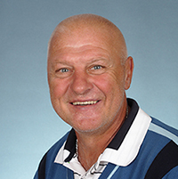

Naši kandidáti
Miroslav Malina
60 let, starosta MČ
Prom ped. Martin Cutych
57 let, učitel
Jaroslav Vokáč
75 let, důchodce
Ing. František Křivánek
45 let, technik-elektro
Miroslav Hofman
58 let, tiskař
Lenka Nikodýmová
53 let, učitelka MŠ

Mgr. Pavel Richter
59 let, OSVČ